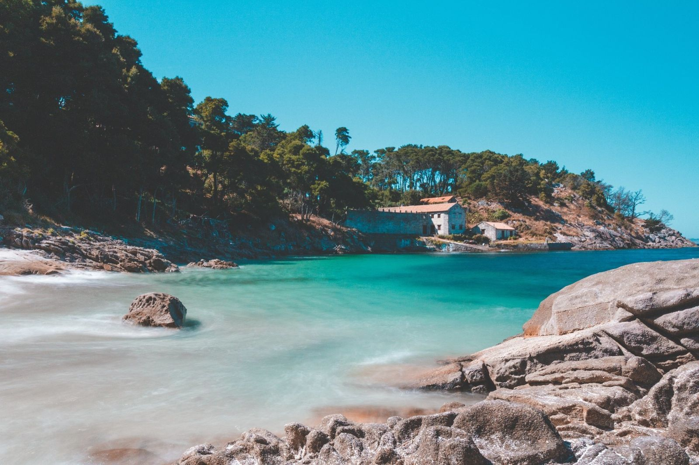
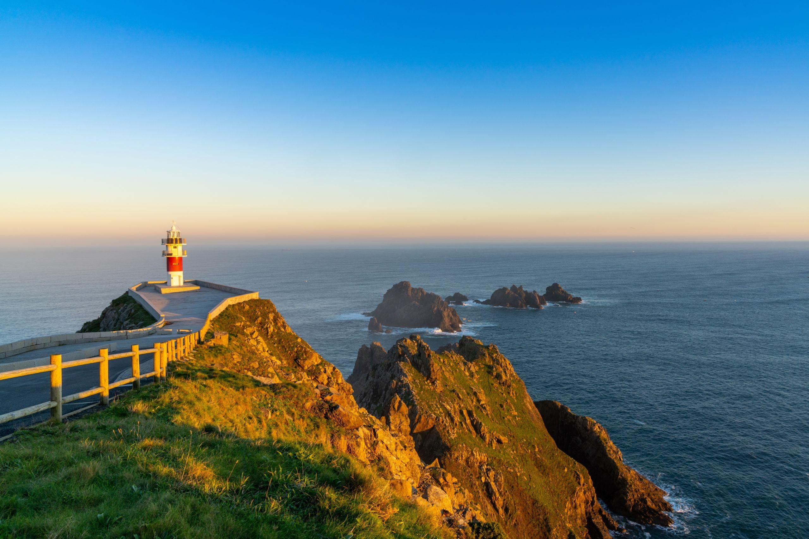
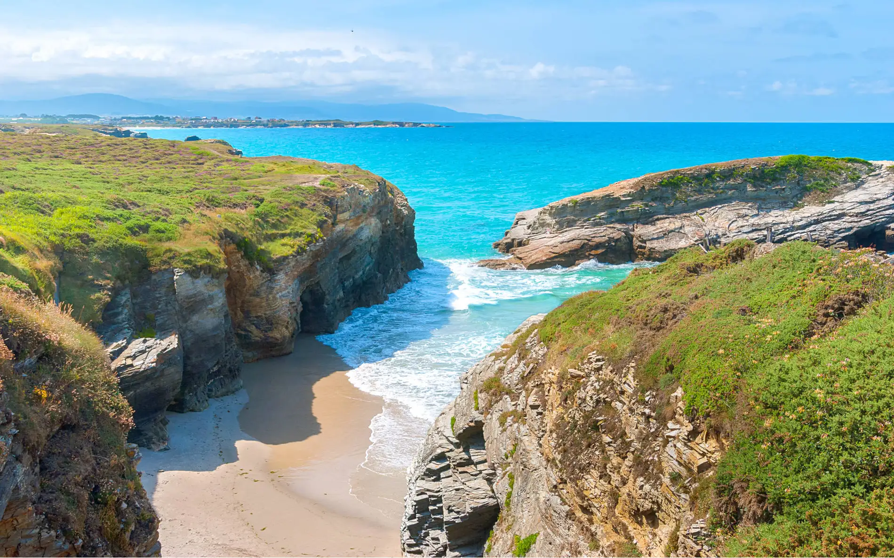
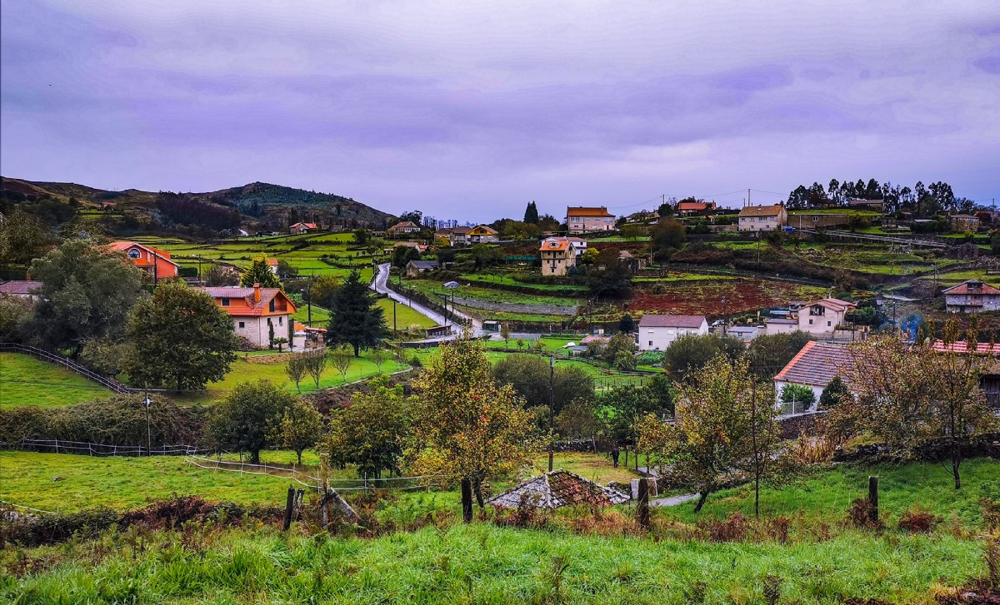
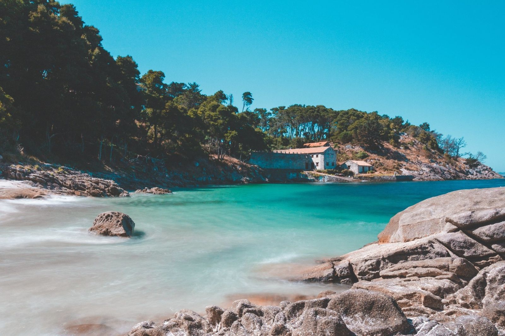
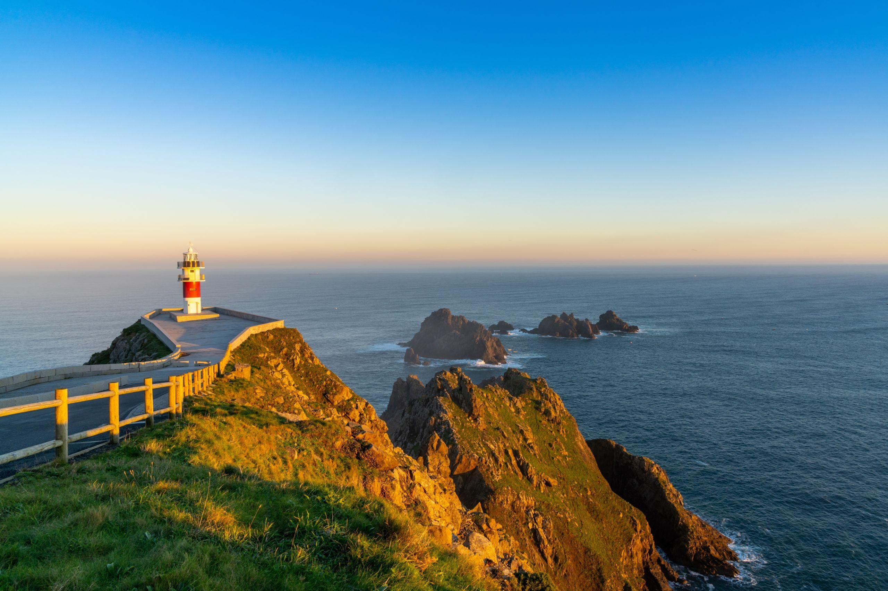
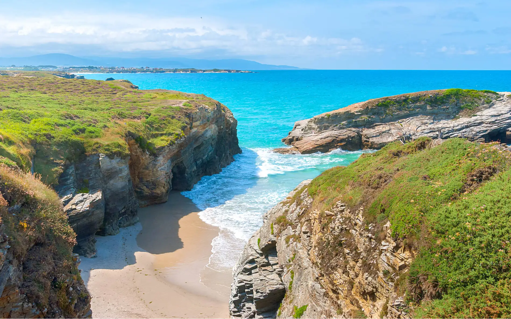
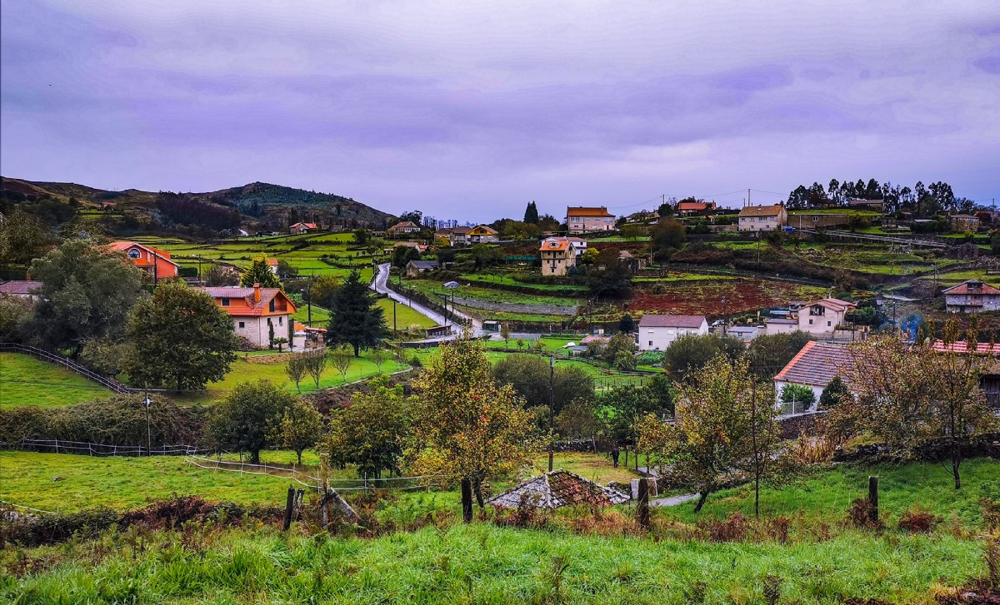

Santiago de Compostela
Ciudad histórica y final del Camino de Santiago, con gran patrimonio cultural.
Ubicación: A Coruña
Naturaleza, costa y tradición
 







Ciudad histórica y final del Camino de Santiago, con gran patrimonio cultural.
Ubicación: A Coruña
Zona costera conocida por sus playas, paisajes y gastronomía.
Ubicación: Pontevedra
Playa famosa por sus formaciones rocosas naturales.
Ubicación: Lugo
Ciudad costera con una gran oferta cultural y marítima.
Ubicación: A Coruña